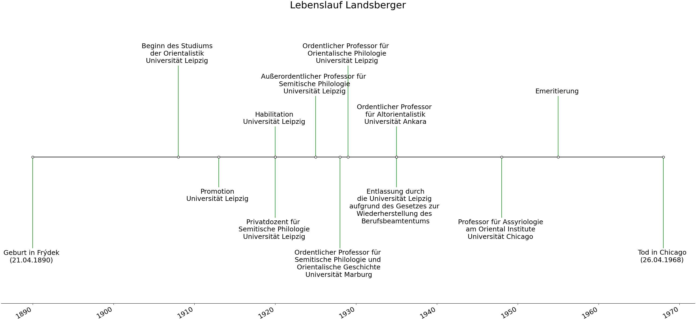
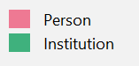
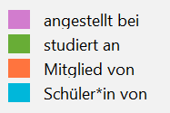
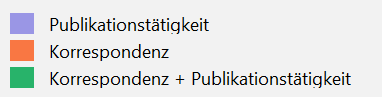

Benno Landsberger und seine Korrespondenz
.jpg)
Landsberger und sein Briefnachlass
Als Student*in oder Wissenschaftler*in im Fachgebiet der Altorientalistik kommt man nicht umhin, eine Reihe von wissenschaftlichen Publikationen als ständige Begleiter im Forschungsprozess zu nutzen. Dabei handelt es sich insbesondere um Listen für Keilschriftzeichen, Wörterbücher und Grammatiken der verschiedenen altorientalischen Sprachen sowie um Einführungswerke, die einen Einblick in die Kultur, Religion, Wirtschaft sowie geographische und naturräumliche Umwelt des Alten Orients ermöglichen. Aufgrund der Tatsache, dass die Altorientalistik seit ihren Ursprüngen ein “Orchideenfach” mit einer vergleichsweise geringen Anzahl an Student*innen und Wissenschaftler*innen ist, überrascht auch nicht, dass man bereits nach kurzer Beschäftigung mit dem Fachgebiet eine überschaubare Menge von Namen von Wissenschaftler*innen kennen lernt, deren wissenschaftliche Erkenntnisse über Jahrzehnte bis in die heutige Zeit die Forschungsarbeit prägen. Einer dieser Namen ist Benno Landsberger (1890-1968). Seine Antrittsvorlesung, die er 1925 an der Universität Leipzig mit dem Thema “Die Eigenbegrifflichkeit der babylonischen Welt” hielt, gilt als einer der “‚fundierenden Texte’ der Assyriologie”.1 Will man sich mit dem Naturraum des Alten Orient beschäftigen, so ist Landsbergers “Die Fauna des alten Mesopotamien nach der 14. Tafel der Serie Ḫar-ra-Ḫubullu” ein Klassiker.2 Mit “Der kultische Kalender der Babylonier und Assyrer” beschäftigte sich Landsberger eingehend mit der Religion des Alten Orient.3 Ein großer Schwerpunkt von Landsbergers Arbeit lag zudem in der Lexikographie.4 Hierzu zählt auch seine Mitherausgeberschaft des Chicago Assyrian Dictionary.5 Die hier erwähnten Publikationen stellen nur eine kleine Auswahl dar, verdeutlichen aber das breite Interessensspektrum Landsbergers.6
Landsbergers wissenschaftliche Karriere ist mit verschiedenen Universitäten verbunden. Nach seinem Studium der Orientalistik an der Universität Leipzig und seiner ebenfalls dort durchgeführten Promotion und Habilitation war er als außerordentlicher und ordentlicher Professor an den Universitäten Marburg und Leipzig tätig. Als Person jüdischen Glaubens wurde er 1935 aufgrund des Gesetzes zur Wiederherstellung des Berufbeamtentums entlassen. Er verließ daraufhin Deutschland und nahm zuerst einen Ruf an die Universität Ankara an, 1948 dann an die Universität Chicago, wo er bis zu seiner Emeritierung tätig war.7

In verschiedenen universitären Archiven wird Korrespondenz aufbewahrt, die zwischen Landsberger und seinen Schüler*innen und Kolleg*innen ausgetauscht wurde.9 Ein Überblick über die Größe des erhaltenen Gesamtkorpus der Landsberger-Korrespondenz fehlt bisher und könnte aufgrund der größtenteils fehlenden digitalen Erschließung der Materialien nur durch aufwendige Recherche in den einzelnen Archiven ermöglicht werden. Hier kann daher nur ein erster Einblick geboten werden.10
Ein Teil des Nachlasses Landsbergers wird an den Universitäten Leipzig und Jerusalem aufbewahrt. Auf der Internetseite des Instituts für Altorientalistik der Universität Leipzig sind im sogenannten “Landsberger Archives” Briefe, Postkarten und Manuskripte in Form von Scans verfügbar gemacht.11 Die dort veröffentlichte Korrespondenz, die nicht nur fachlicher Natur ist, sondern auch an Familienangehörige gerichtet ist, umfasst ca. 80 Briefe und Postkarten unterschiedlicher Länge, die handschriftlich oder mit der Schreibmaschine verfasst wurden. Zu einigen Briefen sind zudem Transkriptionen auf der Internetseite verfügbar gemacht. Viele der in Leipzig aufbewahrten Briefe stammen aus dem Nachlass Karl Friedrich Müllers, der ein Schüler Landsbergers war. Das in Jerusalem aufwahrte Material ist Teil von Landsbergers Nachlass, das dem Institut für Archäologie der Hebrew University vermacht wurde und auch Landsbergers Privatbibliothek umfasst.
Die Korrespondenz Landsbergers mit seinem Doktoranden Fritz Rudolf Kraus, der ebenfalls ins türkische Exil fliehen musste und 1953 schließlich eine Professur an der Universität Leiden erhielt, befindet sich in der Leiden University Libraries. Ein Teil der Briefe (etwa 430) sind in einer Monographie publiziert worden12, mindestens genauso viele Briefe aus dieser Korrespondenz scheinen aber noch unveröffentlicht zu sein.13 Eine weitere Quelle für Briefe von und an Landsberger stellt laut Vacíns Biographie zu Landsberger die Korrespondenz von Peter Jensen dar, der 1895-1928 als Ordinarius an der Universität Marburg lehrte, und dessen Briefnachlass sich im Archiv der Universität Marburg befinden soll.14 Auch am Oriental Institute der University of Chicago werden Manuskripte und Korrespondenz Landsbergers aufbewahrt.15 Die Größe des Briefkorpus wird aus den veröffentlichten Angaben des Oriental Institute nicht ersichtlich. Die Korrespondenz in den Archiven der Universität Marburg und der University of Chicago ist m. W. nach bisher weder digital erschlossen noch publiziert. Vacín geht zudem davon aus, dass sich weitere Korrespondenz Landsbergers an der Universität Ankara, im Museum of the Ancient Orient in Istanbul und bei behördlichen Institutionen in der Türkei befindet, die für Bildung und Wissenschaft zuständig waren.16
Des Weiteren wird durch eine Suche über den Kalliope-Verbundkatalog17 deutlich, dass vereinzelte Briefe von und an Landsberger in der Universitätsbibliothek Heidelberg, an der Universitätsbibliothek Leipzig18, der Staatsbibliothek zu Berlin19 sowie an der Bayerischen Staatsbibliothek aufbewahrt werden.
Kontextualisierung der Korrespondenz
Eine fachhistoriographische Untersuchung der Korrespondenz Landsbergers erfordert auch eine historische Einordnung in die Fachcommunity. So stellt sich beispielsweise die Frage, in welchem wissenschaftlichen Beziehungsverhältnis Landsberger zu seinen Korrespondenzpartner*innen stand. Dies kann sich auf eine institutionelle Ebene beziehen und Fragen beantworten wie: Haben sie gemeinsam an einer Universität studiert, arbeiteten sie gemeinsam an einer Universität oder Forschungseinrichtung, bestand ein Lehrer*innen-Schüler*innen-Verhältnis, waren sie beide Mitglieder einer Wissenschaftsakademie oder eines Verbandes? Dies kann sich beispielsweise aber auch auf gemeinsame Publikations- und Herausgebertätigkeiten oder die Rezension einer Publikation des*r Korrespondenzpartner*in beziehen. Hierbei ist nicht nur interessant zu analysieren, mit welchen Personen aus der Fachcommunity Landsberger korrespondiert hat, sondern auch mit welchen potenziellen Korrespondenzpartner*innen - sei es aus institutioneller Perspektive oder aus der Publikationstätigkeit heraus - eben kein Briefwechsel vorliegt. Letzterer Fall erfordert eine Recherche, ob es tatsächlich keinen Briefwechsel gab, ob dieser bisher unbekannt in einem institutionellen oder Familienarchiv aufbewahrt wird oder nicht erhalten ist. Aus dem hier vorliegenden Teil des Briefnachlasses allein wird in den meisten Fällen nicht klar, woher die Korrespondierenden sich kennen und ob es bereits ältere, möglicherweise nicht erhaltene oder an einem anderen Ort aufbewahrte Korrespondenz gibt. Zur Beantwortung dieser Frage müssten unter Hinzuziehung weiterer Quellen zusätzliche biographische Daten über die Korrespondierenden erhoben werden, was einen großen Rechercheaufwand mit sich bringen würde. Eine historische Einordnung Landsbergers in die Fachcommunity seiner Zeit stellt sich auch als Herausforderung dar, da sich vorab die Frage stellt, welche Personen und Institutionen die Fachcommunity der Altorientalistik damals und heute ausmachen. Wie bereits in ?@sec-erinnerungskulturen diskutiert, lassen sich wissenschaftliche Disziplinen als Erinnerungskulturen verstehen. Ein Kollektiv aus Wissenschaftler*innen definiert in diesem Sinne, welche Ideen, Personen und Institutionen als für das Fach erinnerungswürdig eingestuft werden. Wie das Beispiel des Internationalen Germanistenlexikons20 verdeutlicht, das am Deutschen Literaturarchiv in Marbach erarbeitet wurde, kann die Zuordnung einer Person zu einer Fachdisziplin systematisch erfasst und schriftlich festgehalten werden. In der Altorientalistik ist diese Zuordnung bisher weniger systematisiert. Eine kleine Gruppe von Wissenschaftler*innen ist mit einem Eintrag im Reallexikon der Assyriologie und Vorderasiatischen Archäologie21 vertreten, wobei hier von einer engen Auswahl zu sprechen ist.22 Des Weiteren bietet die Webseite “Who is who in cuneiform studies” eine Liste von Wissenschaftler*innen der Fachdisziplin.23 Doch auch zusammengenommen bieten diese beiden Quellen keine Vollständigkeit und sind zudem nicht in einem Format zugänglich, das einen Download und eine computerbasierte Analyse der Daten ermöglicht. Um dennoch auch ohne eine von der Fachcommunity kanonisierte Liste zumindest einen ersten Überblick über die Fachcommunity zu Landsbergers Zeiten zu erhalten, wurde daher auf Wikidata als Datenquelle zurückgegriffen.24 Hierzu wurde eine SPARQL-Query geschrieben, die über den Wikidata Query Service25 eine Abfrage nach Personen durchführt, die den Beruf (P106 occupation) Assyriologist (Q19361459), Hittitologist (Q4529715), Sumerologist (Q67931007) oder Near Eastern Archaeologist (Q26424344) haben26, deren Geburtsdatum (P569) zwischen 1820 und 1948 fällt und deren Todesdatum (P570) nicht vor 1908 liegt, dem Jahr, in dem Landsberger sein Studium in Leipzig begann.27 Auf einer offenen Plattform wie Wikidata herrschen keine eindeutigen Regeln für das Labeling, so dass die entstandene Sammlung von Personennamen Grundlage für eine Diskussion bietet, inwiefern die genannten Personen tatsächlich den ihnen zugeschriebenen Berufsbezeichnungen zuzuordnen sind. Bei Durchsicht der entstandenen Personenliste wurde zudem deutlich, dass einerseits unvollständige, inkorrekte und nicht durch Referenzen belegte Einträge28 unter den Suchergebnissen vorhanden waren, die daher aus dem entstandenen Datensatz gelöscht wurden. Somit hat der Datensatz eine erste Bearbeitung erfahren, die ebenfalls von der Fachcommunity auf seine Legitimität diskutiert werden könnte. Gleichzeitig war auffällig, dass bekannte Namen der Fachdisziplin in dieser Liste fehlten. Daher wurden zusätzlich die beiden bereits genannten Quellen, das Reallexikon der Assyriologie und Vorderasiatischen Archäologie und die Webseite “Who is who in Cuneiform Studies”, hinzugezogen, um durch einen manuellen Abgleich die aus den Wikidata-Einträgen entstandene Liste zu ergänzen. Die fehlenden Personen konnten ebenfalls größtenteils in Wikidata aufgefunden werden. Dass diese Personen nicht mit der ursprünglichen SPARQL-Query erfasst wurden, lag darin begründet, dass entweder gar keine oder fehlerhafte Geburtsdaten in Wikidata eingetragen oder den Personen andere Berufe zugeordnet waren.
Die aus der Wikidata-SPARQL-Query und den anderen beiden Quellen generierte CSV-Datei umfasste zunächst nur die Personennamen, Geburts- und Sterbedatum sowie den Wikidata-Identifier. Mithilfe des Reconciliation Service des Data Wrangling Tools OpenRefine29 konnte die Liste um weitere optionale Angaben aus Wikidata ergänzt werden. Hierzu zählen die Wikidata-Properties Schul-/Studienorte (P69), Arbeitgeber (P108), Mitgliedschaften (P463), Schüler*innen-Lehrer*innen-Beziehungen (P802 und P1066) sowie die GND ID (P227). Auch diese Abfrage wurde einer ersten Bearbeitung und Prüfung unterzogen. Unter den Schul-/Studienorten wurden die Angaben zu Grundschul- und Gymnasialbildung entfernt. Bezüglich der Mitgliedschaften wurden nur wissenschaftliche Institutionen berücksichtigt (Wissenschaftsakademien, Deutsches Archäologisches Institut etc.).30 Des Weiteren ist zu bemerken, dass die Menge an vorliegenden Informationen zu jeder Person stark variiert, so dass Personen gewichtiger als andere erscheinen können, was aber schlicht an einem Informationsungleichgewicht liegt. Um die hierdurch gewonnenen Angaben nachvollziehbar zu machen, wurden die Daten für eine Netzwerkvisualisierung mit Personen und Institutionen als Knoten und mit den beschriebenen Beziehungen als ungewichtete Kanten vorbereitet.31 Die Schüler*innen-Lehrer*innen-Beziehung, die in Wikidata mit zwei verschiedenen Properties beschrieben ist (“ist Schüler*in von” und “ist Lehrer*in von”), wurde im Netzwerk zu einer “ist Schüler*in von”-Beziehung vereinfacht, da ansonsten vielfach parallele Kanten zwischen zwei Personen aufgetreten wären, die die Darstellung unnötig verkompliziert hätten. Vereinzelt gibt es zu Personen in Wikidata auch Einträge, die einen doctoral advisor (P184) anführen. Dies müsste in einem zusätzlichen Schritt ebenfalls einbezogen werden, hat in dieser Datenzusammenstellung jedoch noch keine Berücksichtigung gefunden. Zudem ist zu betonen, dass hier eine reine Visualisierung32 und keine Netzwerkanalyse präsentiert wird. Diese hätte sich aufgrund der noch zu diskutierenden und z.T. unausgewogenen Informationsmenge derzeit noch nicht als valide erwiesen und aufgrund des bimodalen Charakters des Netzwerks als schwierig herausgestellt.33
Um der Frage nachzugehen, inwiefern Landsbergers Publikationstätigkeit in Zusammenarbeit mit Fachkolleg*innen mit einer Korrespondenz mit eben diesen Fachkolleg*innen korreliert, wurde eine weitere Netzwerkdarstellung erstellt34, die in Form eines Ego-Netzwerks Landsberger als Zentrum hat. Personen sind als Knoten angelegt. Die Kanten spiegeln Beziehungen wie gemeinsame Publikationstätigkeit, Korrespondenz und beides in Kombination wider. Während die Korrespondenzpartner*innen für die Netzwerkdarstellung aus den Metadaten der Briefe (siehe dazu ?@sec-metadaten) entnommen wurden, entstammen die Daten für die Publikationstätigkeit Landsbergers einem 1974 publizierten Artikel von Anne Draffkorn Kilmer und Johannes Renger, der einen Überblick über die von Landsberger verfassten Publikationen bietet.35 Auch bei der Darstellung dieses Netzwerks muss man auf Einschränkungen hinweisen. Als Korrespondenzpartner*innen Landsbergers finden sich in dieser Darstellung nur Personen als Absender*innen und Empfänger*innen aus dem in Leipzig und Jerusalem aufbewahrten Briefnachlass. Dies erweckt den Eindruck eines wenig internationalen Briefnetzwerks Landsbergers, das nicht dem international weit gefassten Gesamtnetzwerk der Altorientalistik-Fachcommunity entspricht, sondern stark durch den Briefwechsel mit Landsbergers Doktoranden Karl Friedrich Müller geprägt ist. Es wäre nötig, auch die Korrespondenzpartner*innen Landsbergers aus den anderen bekannten Archiven, die Korrespondenz von und an Landsberger aufbewahren, hinzuzuziehen, um eine bessere Einschätzung über die Größe des Netzwerks zu erhalten. Betrachtet man das Landsberger-Netzwerk aus Korrespondenz und Publikationstätigkeit, fällt jedoch auf, dass dort Personen vertreten sind, die nicht im Gesamtnetzwerk der Altorientalistik-Fachcommunity wiederzufinden sind (im Netzwerk als rote Punkte markiert). Dies kann verschiedene Gründe haben. Sie können beispielsweise aus anderen Fachdisziplinen stammen oder schlicht keinen Wikidata-Eintrag besitzen. Dies kann letztlich darin begründet sein, dass sich bisher niemand die Mühe gemacht hat, einen Eintrag in Wikidata anzulegen, kann aber auch Hinweis darauf sein, dass diese Person von der Fachcommunity nicht als bedeutendes Mitglied der Fachdisziplin wahrgenommen wurde oder wird. Als Beispiel dafür können Karl Friedrich Müller36 und Walter G. Kunstmann37 dienen, mit denen Landsberger korrespondierte. Die Tatsache, dass durch die Analyse der Briefkorrespondenz auch Personen in den Vordergrund rücken, die nicht zwangsweise zu den “großen Persönlichkeiten” eines Faches gezählt werden, aber dennoch ihren Beitrag zur Entwicklung des Faches geleistet haben, ist als positives Fazit für die Edition von Fachkorrespondenz zu werten.
Die Frage, ob die Korrespondenz Landsbergers als ein repräsentatives Beispiel für die Korrespondenz der Fachcommunity seiner Zeit gewertet werden kann, lässt sich im Rahmen dieser Arbeit nicht klären. Hierzu wäre es notwendig, andere Briefkorpora von Altorientalist*innen auszuwerten. Anbieten würde sich diesbezüglich die Korrespondenz von Hans Gustav Güterbock und Albrecht Goetze sowie von Fritz Rudolf Kraus. Diese Personen waren wie Landsberger ins Exil gezwungen und setzten nach dem Krieg ihre Karriere in den USA bzw. den Niederlanden fort. Ihre Korrespondenz ist z.T. in gedruckter Form publiziert.38
Auffällig in Bezug auf die für diese Fallstudie herangezogenen Briefe von und an Landsberger ist die Tatsache, dass es sich bei den Personen, die Briefe erhalten und empfangen, ausschließlich um männlich gelesene Personen handelt. Dies gilt ebenso für die in den Briefen erwähnten Personen. Hier stellt sich die Frage, ob die Fachcommunity der Altorientalistik zu Landsbergers Zeiten keine oder nur wenige weiblich gelesenen Personen einschloss oder Wissenschaftlerinnen in dieser Zeitperiode zwar aktiv waren, jedoch von der Fachcommunity so marginalisiert wurden, dass sie in der Briefkorrespondenz dieser Zeit nicht sichtbar werden. In dem oben beschriebenen, aus Wikidata generierten Netzwerk von Altorientalist*innen sind nur ca. 30 Personen mit sex or gender39 als weiblich eingeordnet gegenüber ca. 200 Personen, die als männlich kategorisiert werden. Diese Verteilung muss jedoch nicht die tatsächliche Zusammensetzung der Altorientalistik-Community dieser Zeitperiode widerspiegeln, da auch die Eintragungen in Wikidata davon geprägt sein könnten, dass weiblich gelesenen Wissenschaftler*innen dieser Zeitperiode weniger Aufmerksamkeit gewidmet wurde und wird, als dies für männlich gelesene Personen gilt. Diese Frage lässt sich im Rahmen dieser Arbeit nicht klären, wäre aber ebenfalls eine notwendige und sinnvolle Aufgabe der Fachhistoriographie, um Strukturen und potenziell ungleiche Machtverteilungen der Fachdisziplin sichtbar zu machen. Notwendig wären hierzu intensive Recherchen in Archiven und die Erschließung weiterer wissenschaftlicher Korrespondenzen, um eine valide Datengrundlage zur Beantwortung dieser Frage zu generieren.40
Landsbergers Korrespondenz kontextualisiert
Wikidata Assyriolog*innen
Farblegende:
Knoten:

Kanten:

Netzwerk Landsberger
Farblegende:
Knoten:
rot: nicht im Gesamtnetzwerk
Kanten:

Zitiervorschlag: Blaschke, Theresa. Benno Landsberger und seine Korrespondenz. Marburg 2024. https://th-blaschke.github.io/landsberger.github.io/.
References
Footnotes
Für einen Überblick zu Landsbergers lexikographischen Beiträgen siehe Foxvog and Kilmer (1975); Kilmer and Foxvog (1975a); Kilmer and Foxvog (1975b).↩︎
https://isac.uchicago.edu/research/publications/chicago-assyrian-dictionary, letzter Zugriff 24.01.2024.↩︎
Eine Liste aller Publikationen Landsbergers bietet Kilmer and Renger (1974). Um Anspielungen auf Publikationen in der Briefkorrespondenz zwischen Landsberger und seinen Fachkolleg*innen leichter zu identifizieren und in den Briefen annotieren zu können, wurde die genannte Publikation im Rahmen dieser Arbeit zudem in eine CSV-Datei überführt und mit Normdaten angereichert. Für das Vorgehen siehe ?@sec-normdaten.↩︎
Eine Kurzbiographie zu Landsberger bieten der Professorenkatalog der Philipps-Universität Marburg (https://professorenkatalog.online.uni-marburg.de/de/pkat/idrec?id=17108, letzter Zugriff 28.11.2023) und der Professorenkatalog der Universität Leipzig (https://research.uni-leipzig.de/catalogus-professorum-lipsiensium/leipzig/Landsberger_91/, letzter Zugriff 24.01.2024). Eine ausführliche Biographie mit Literatur zu weiteren Nachrufen und Artikeln zu Landsberger bieten Vacín and Sýkorová (2018).↩︎
Für das Python-Skript zur Erstellung der Abbildung siehe https://github.com/th-blaschke/landsberger.github.io/blob/main/files/python/create_timeline_biography.py.↩︎
Anders als beispielsweise die Korrespondenz von Hans Gustav Güterbock, eines Schülers Landsbergers, dessen Korrespondenz sich im Deutschen Exilarchiv befindet (https://www.dnb.de/DE/Ueber-uns/DEA/Nachrichten/_content/gueterbock.html, letzter Zugriff 28.01.2024), ist die Korrespondenz Landsbergers nicht an einem zentralen Ort aufbewahrt.↩︎
Für einen Überblick über die möglichen Aufbewahrungsorte der Korrespondenz Landsbergers siehe auch Vacín and Sýkorová (2018), 106.↩︎
Schmidt (2014), ix; Vacín and Sýkorová (2018), 106 mit Fn. 382.↩︎
https://kalliope-verbund.info/, Suchstichwort: Benno Landsberger, letzter Zugriff 28.01.2024.↩︎
Diese Sammlung ist getrennt von dem im Altorientalischen Institut der Universität Leipzig aufbewahrten Briefnachlass.↩︎
Hier befindet sich Korrespondenz zwischen Benno Landsberger und dem Verlag Vandenhoeck & Ruprecht.↩︎
Siehe hierzu die Rubrik “History of Science” in der online publizierten Lemmaliste des Lexikons, https://publikationen.badw.de/de/rla/index, letzter Zugriff 30.12.2023.↩︎
https://cdli.ox.ac.uk/wiki/doku.php?id=who_s_who_in_cuneiform_studies, letzter Zugriff 30.12.2023.↩︎
https://www.wikidata.org/wiki/Wikidata:Main_Page, letzter Zugriff 03.03.2024. Für eine Diskussion zu Wikidata als Normdatenquelle siehe auch ?@sec-normdaten.↩︎
https://query.wikidata.org/, letzter Zugriff 30.12.2023.↩︎
Die SPARQL-Query ist unter folgendem Link zu finden: https://github.com/th-blaschke/landsberger.github.io/blob/main/files/network_data/assyriologists_wikidata.rq. Für die unterschiedlichen Bezeichnungen in der Fachdisziplin siehe auch ?@sec-fragestellung. Label wie Ugaritologist oder Elamotologist existieren auf Wikidata bisher nicht.↩︎
Die GND ist für eine Abfrage wie diese weniger geeignet, da sie deutlich weniger Lebensdaten über die Personen zur Verfügung stellt und somit keine gute zeitliche Eingrenzung des in Frage kommenden Personenkreises erlaubt.↩︎
Siehe beispielsweise https://www.wikidata.org/wiki/Q313353 mit fehlender Referenz, die die Berufsbezeichnung Hittitologist in Frage stellt, oder https://www.wikidata.org/wiki/Q26938383 mit einem inkorrekten Geburtsdatum (der Wissenschaftler ist noch heute tätig und kann nicht um 1900 geboren sein), letzter Zugriff 30.12.2023.↩︎
https://openrefine.org/docs/manual/reconciling, letzter Zugriff 30.12.2023.↩︎
In Wikidata finden sich zahlreiche weitere Angaben wie z.B. die Mitgliedschaft in Burschenschaften, Parteien sowie insbesondere bei deutschen Wissenschaftlern die Zugehörigkeit zu SA und SS während des Nationalsozialismus. Diese Verbindungen wären eine eigene Untersuchung wert.↩︎
Die Datengrundlage für das Netzwerk ist hier zu finden: https://github.com/th-blaschke/landsberger.github.io/blob/main/files/network_data/nodes_assyriologists.csv für die Knoten; https://github.com/th-blaschke/landsberger.github.io/blob/main/files/network_data/egdes_assyriologists.csv für die Kanten.↩︎
https://ouestware.gitlab.io/retina/beta/#/graph/?url=https%3A%2F%2Fgist.githubusercontent.com%2Fth-blaschke%2F9aee057730e456325a9ac25b174f27bc%2Fraw%2Ff970650912803a55b4b51659e2e76d3c829cde4d%2Fnetwork-aa0383db-ac1.gexf.↩︎
Siehe hierzu auch Weingart (2011). Die Visualisierung wurde mit dem Tool Gephi (https://gephi.org/, letzter Zugriff 27.01.2024) erstellt. Um das Netzwerk online zur Verfügung zu stellen, wurde das Gephi-Plugin “Publish to the web” benutzt. Im Vorgehen wurde Espinoza (2022) gefolgt.↩︎
https://ouestware.gitlab.io/retina/beta/#/graph/?url=https://gist.githubusercontent.com/th-blaschke/3b17d5a8433061c27315c89fd9f41c4b/raw/03c2ec7cc8d0c280f3550a0cfd08f0f9376fc2bb/network-406884ae-9ff.gexf.↩︎
Für eine Beschreibung der Erschließung der Daten dieses Artikels siehe ?@sec-normdaten. Die gesamte Datengrundlage für dieses Ego-Netzwerk ist unter folgendem Link zu finden: https://github.com/th-blaschke/landsberger.github.io/blob/main/files/network_data/nodes_landsberger.csv für die Knoten; https://github.com/th-blaschke/landsberger.github.io/blob/main/files/network_data/edges_landsberger.csv für die Kanten.↩︎
Seine Dissertation zum assyrischen Königsritual ist in der GND unter https://d-nb.info/560743793, letzter Zugriff 03.03.2024, zu finden.↩︎
https://d-nb.info/gnd/125725353, letzter Zugriff 03.03.2024.↩︎
Wikidata-Property (P21), https://www.wikidata.org/wiki/Property:P21, letzter Zugriff 04.02.2024.↩︎
Zum Thema Data Feminsim und verzerrter, nicht-repräsentativer Datensätze bzw. Datensätzen, die erst gar nicht erhoben werden, da die Daten sammelnde Community kein Interesse daran zeigt, siehe D’Ignazio and Klein (2020), 33-39.↩︎